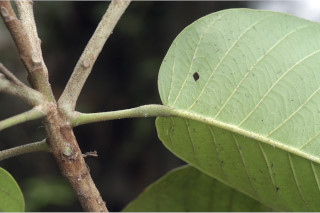
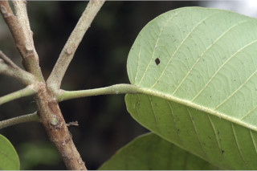
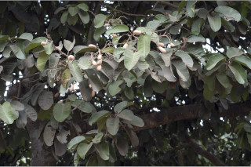
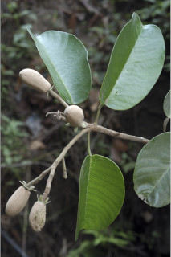
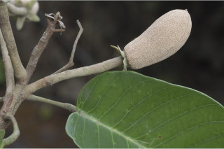
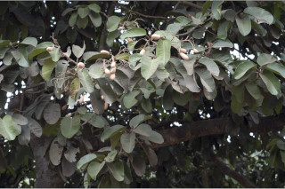
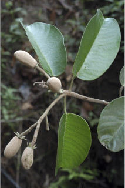
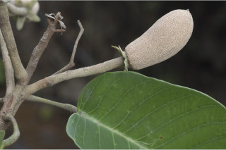

Tamil: Dhupa maram, Painimaram, Vellaikundrikam, Vellaidamar, Vellai kungiliyam
Malayalam: Baine, Kunturukkam, Paenoe, Paine, Paini, Payan, Payani, Payin, Pandam, Pantam, Peini, Perumpayani, Perumpiney, Pine, Piny, Pyney, Telli, Thelli, Vella kunturukkum, Vellapayin, Vellakondricum, Velutta kunturukkam
Kannada: Bilagaggala, Bilidhoopa, Dhupa mara, Dhoopada mara, Gugli, Hugadamara, Rala, Velthapaini
English: Indian copal tree, Piney varnish tree, White dhamar
Vernacular names
Images


 


 




